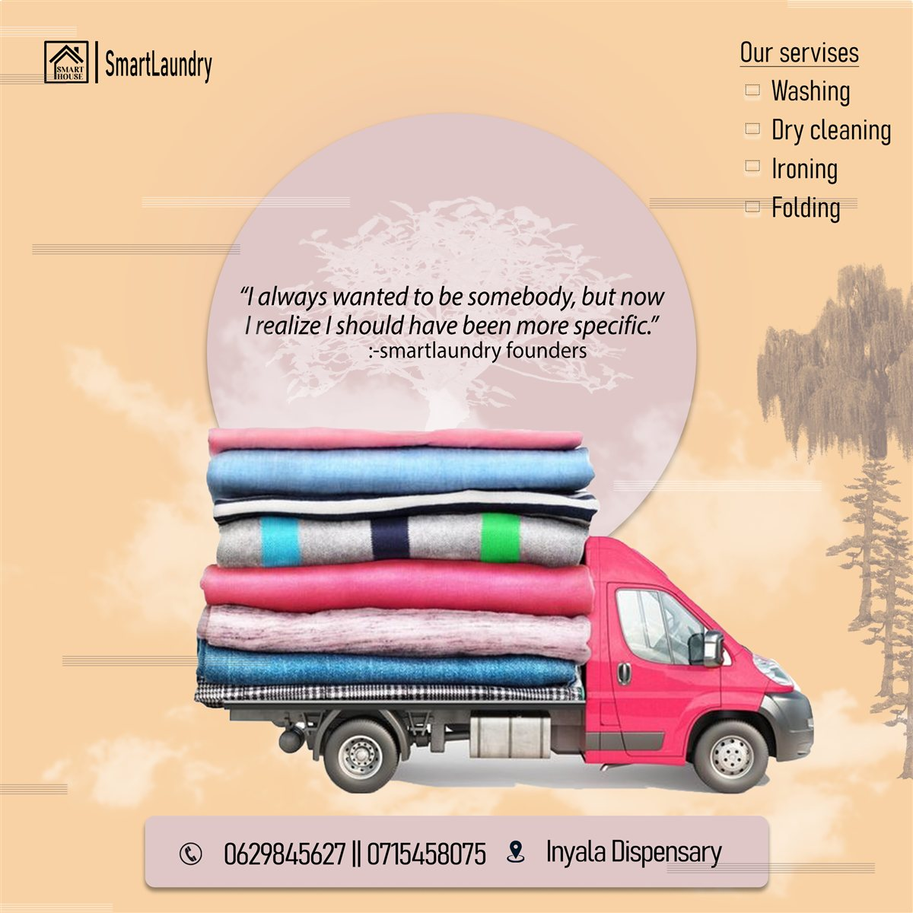
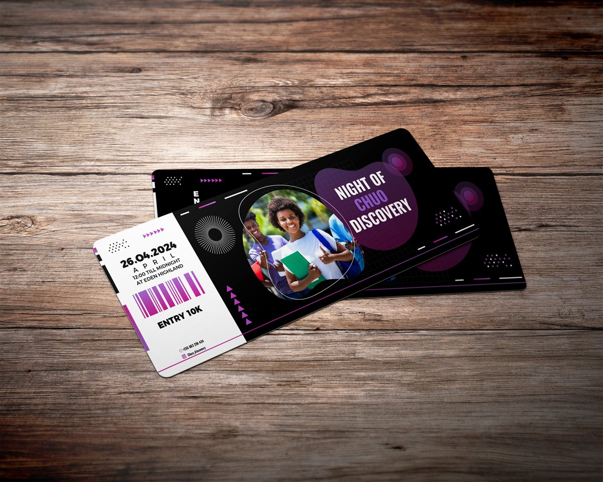
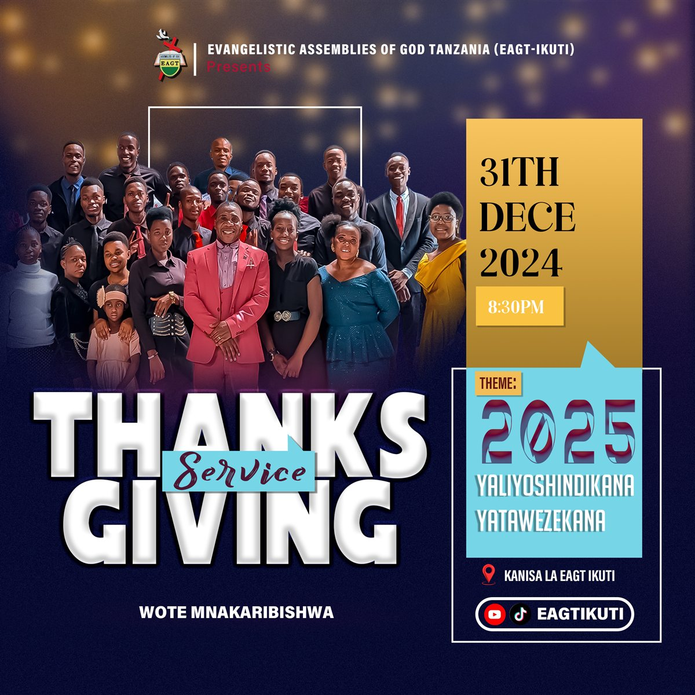
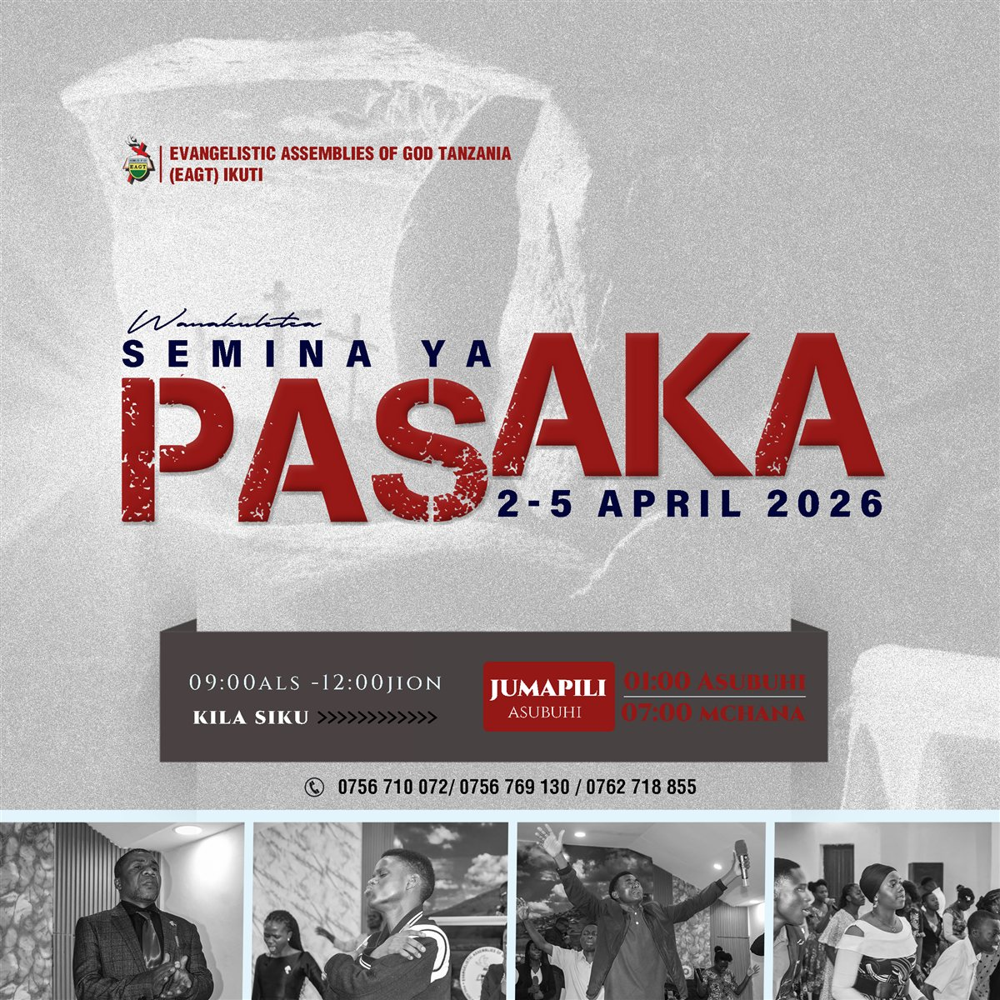

Brand Identity
Logos, colour systems, typography, and visual guidelines that give your brand a memorable identity.
Graphic Designer • UI/UX & Web Designer
I am Grace Abdul Mwambelo, a creative designer from Mbeya, Tanzania. I create clear brand identities, engaging digital graphics, user-friendly web experiences, and reliable IT solutions.
About me
I am a Computer Science graduate, Graphic Designer, Web Developer, and IT Specialist. I combine creative design with web programming, network support, and computer-maintenance skills to create work that is attractive, useful, and reliable. From a single logo to a digital campaign, responsive interface, or IT-support task, I focus on understanding the goal first and delivering a clear solution.
What I do
Logos, colour systems, typography, and visual guidelines that give your brand a memorable identity.
Flyers, banners, posters, social media content, and print-ready marketing materials.
Responsive layouts, interface concepts, visual assets, and user-focused website experiences.
Network configuration, computer maintenance, hardware troubleshooting, and support for creative digital workflows.
Selected work
Academic Web Project
A web-based system for parcel registration, dispute management, GIS records, negotiation, agreements, notifications, and audit logging.
Python · Django · HTML · CSS · JavaScript · Leaflet · GeoJSON
Graphic Design
Logo concepts, promotional graphics, print materials, and digital campaign assets created for clients.
Web Design
Clean, accessible layouts and visual systems that improve user experience and visual consistency.
For more graphic-design samples, please view my Google Drive portfolio.
Graphic design gallery
A selection of posters, event campaigns, business advertisements, digital promotions, and visual-branding work.




Experience
Creating logos, banners, flyers, branding assets, and print-ready files for diverse clients.
Configured network servers, user access controls, and Active Directory systems; monitored traffic and resolved network and hardware issues.
Configured switches, routers, and access points; supported cabling, signal testing, network diagnostics, and connectivity troubleshooting.
Supported campus network configuration, digital infrastructure, communication layouts, visual maps, and shared asset repositories.
Created responsive websites using HTML, CSS, and JavaScript; managed SQL-backed data, maintained hardware, and provided technical support.
Education & languages
Bachelor of Science in Computer Science
Mbeya University of Science and Technology
2023 – 2026
Languages
Kiswahili – Fluent
English – Fluent, including professional writing
Let's create something useful
I am available for graphic design, branding, UI/UX, web design, and digital-support opportunities.
mwambelograce12@gmail.com